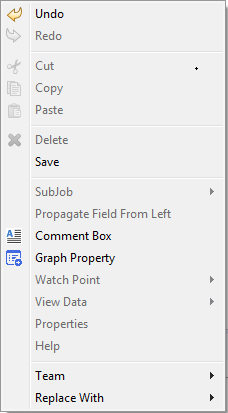
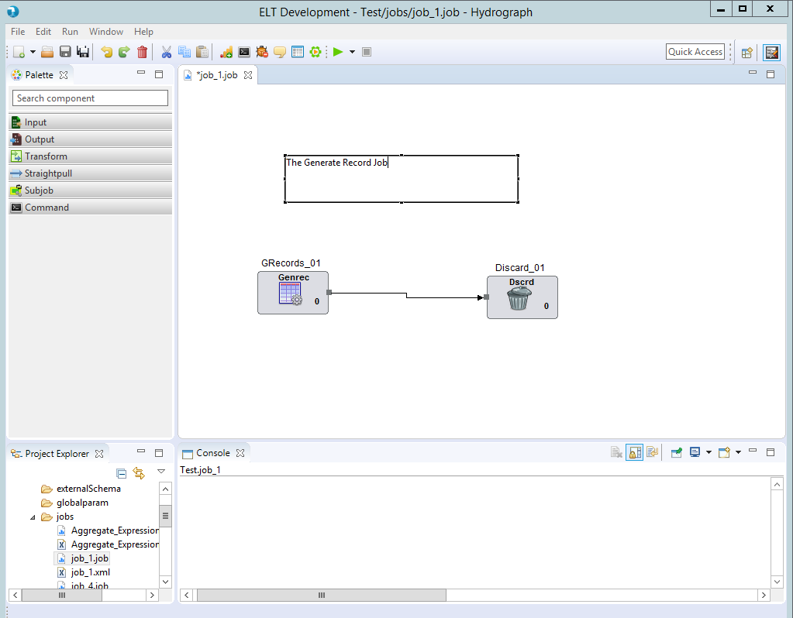

Comment Box
Comment Box is used to add the comments on job canvas to make jobs more meaningful.7. The default size of comment box should be of 3 lines in height and 40 characters wide
Comment Box can be easily distinguished in the coolbar.
There is a menu option on right click context menu on job canvas to add comments on job canvas.

An enlarged version of the same is depicted when dragged on the canvas.
